Back
Old School Photoshop: The image is dark, but not full of terrors
During my last days as an undergraduate, me and my friends went for a photoshoot. It was very early in the morning during the mighty summers of Kanpur. The Sun was starting to come up from behind the clouds and the sky looked lovely. So I asked my friend Ish to click this photo of me and Anand, because I liked the sky in the background so much.
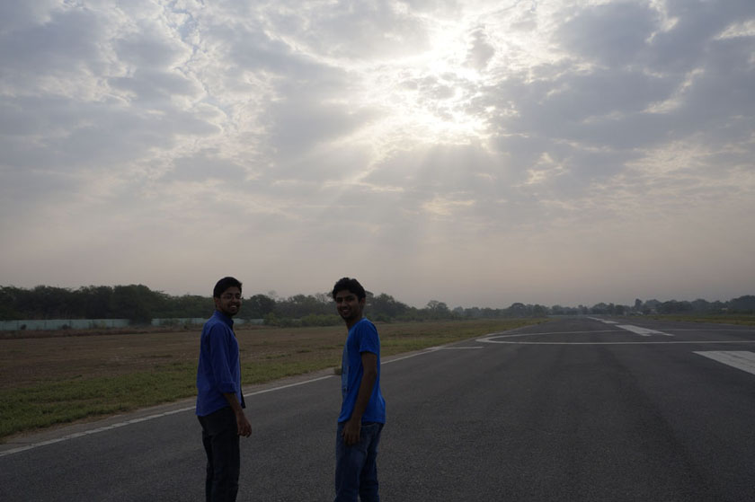
A camera’s dilemma
When you are clicking a picture, there are many objects in the scene in front of you. You know that there is only one point where the camera can focus accurately. The rest get blurred- some less and some more. That’s what gives you the amazing Bokeh effect. The same is true for exposure. In this photo, the sky is too bright compared to the foreground. The camera can control the amount of light entering it, but if it ramps up the exposure so that the people in the image look optimally bright, tons of light from the sky would cause the sensors to max out . I have adjusted the brightness and contrast in Photoshop and here is how it would have looked.
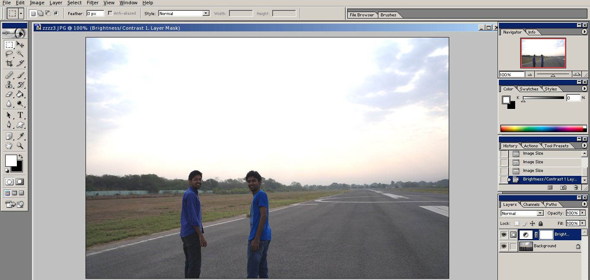
And to prevent the sky part from getting flushed with completely white light, the camera has to reduce the exposure, but that still leaves us with the problem - the camera can choose only one of the two - us, or the sky.
Layers, and a lot of erasing
A canvas in Photoshop is made up a stack of layers. A layer is just an image, but it can have transparent areas, from where you can look through and see the layers below. Here, I duplicate the original image to make a new layer, which I then adjust for brightness so that the people in the image look bright. I erase the top part to remove the sky like this.
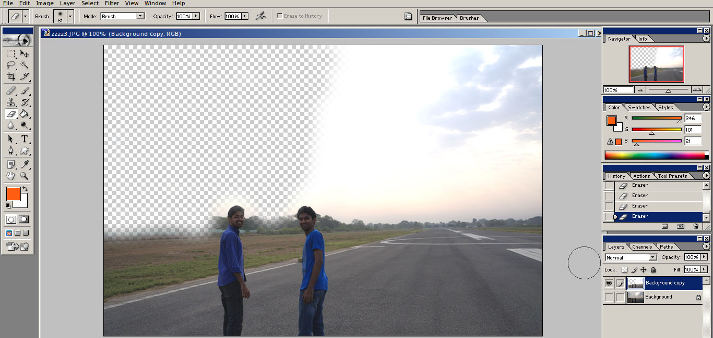
The checkered part is actually the part which is erased and is now transparent. I place this layer on top of the original pic.

See how you can look through to see the sky as it is in the bottom unedited layer. I now carefully erase parts of the top layer near the part where the two layers merge, using a soft brush.
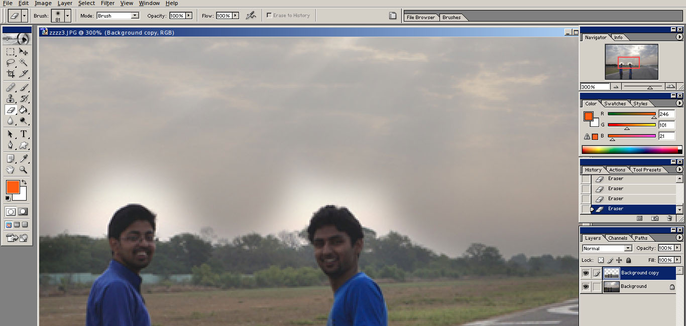
The regions near the more intricate regions need to be erased carefully. If I am clumsy, I might end up erasing some parts of the face, which will make the dark faces of the bottom layer show up, and defeat our entire purpose.
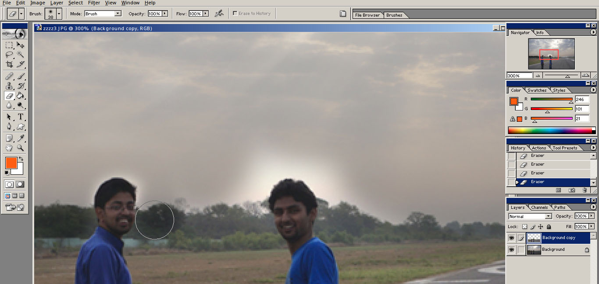
Once completed, the image looks like this, where you have good exposure for both the sky and the foreground.
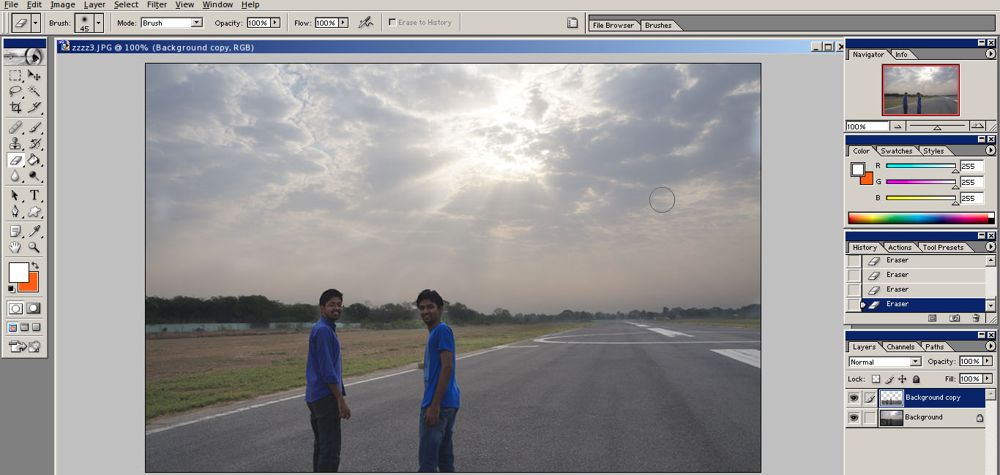
Why settle for good when you can make it awesome
Amongst the few features of Photoshop that I know, perhaps the coolest one is Blending Modes. It decides how the a layer would add to the layer below. It basically changes the mathematics of how the pixels of the two layers are combined to generate pixels for the overall output image. It is very easy to just cycle through the available blending options, and so I often experiment with it. I take the image that we created in the previous section and make a duplicate layer on top. The blending mode Color Dodge gives the following output.
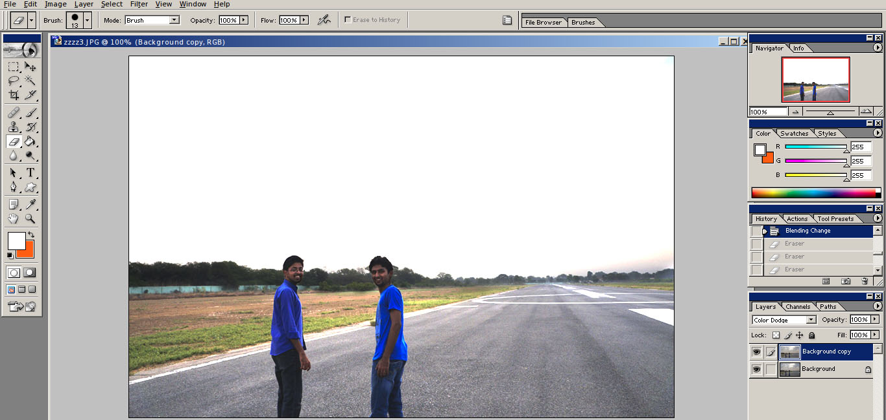
It looks cool. I again carve out the top portion to reveal the sky from the back.
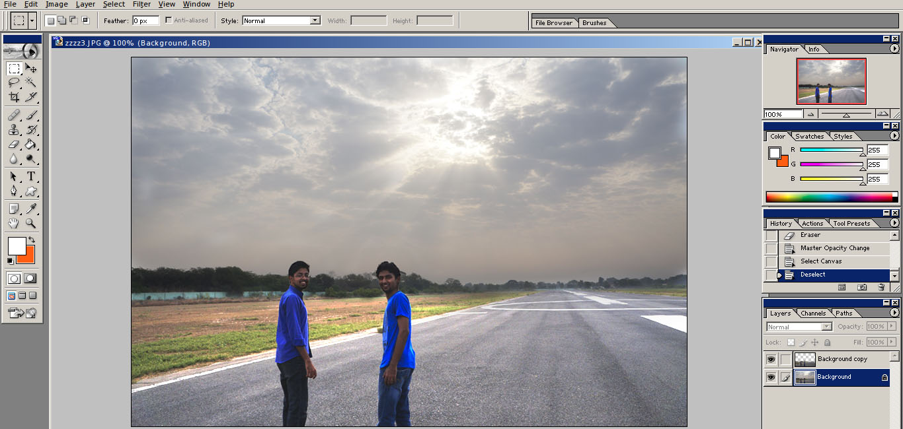
Notice the pattern here - we carve out a select region from the image and transfer it to a new layer. Then we do all sorts of things on the top layer. All you need is a careful hand while using the eraser tool.
Here I go a little further to do the same with the sky. So now I have a layer with only the sky in it, and the blending mode Color Burn. It brings out the color. Look at the blue of the sky and the red at the horizon.
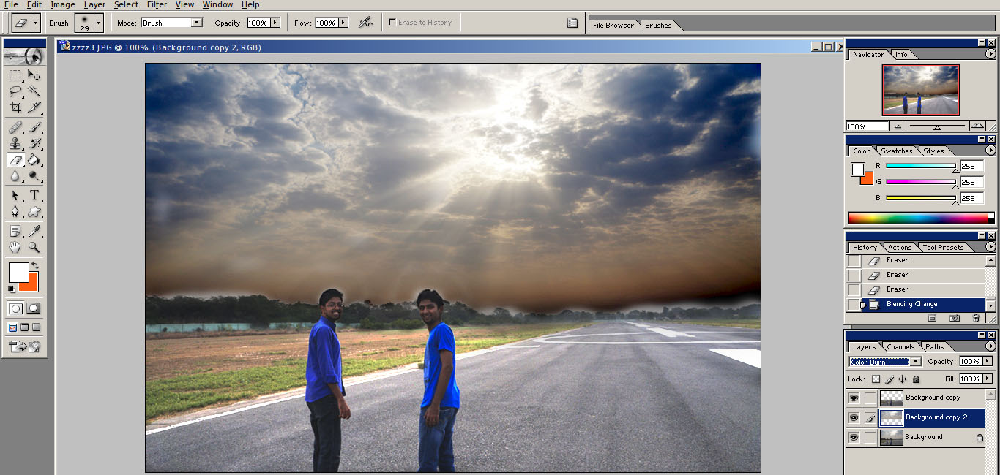
But it looks too much. In any such situation, you can simply reduce the opacity of the layer so that the effect gets less pronounced. Also, we need to take care of the clumsy erasing done here at the boundary. So I press Undo a lot and attempt again!
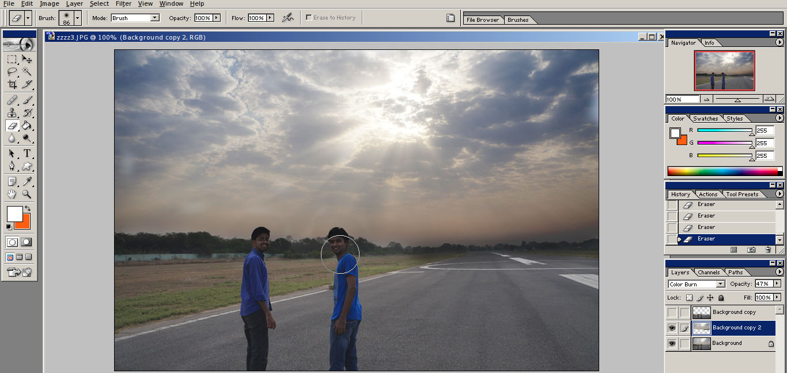
Now see all three layers together. Looks great.
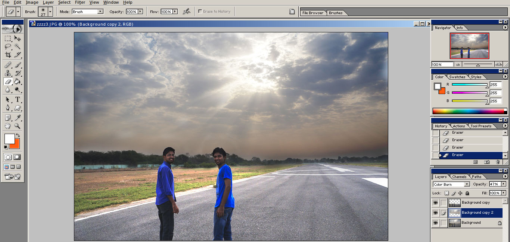
One last thing. Sunlight looks yellow, or yellow-reddish. It has that glorious subtle color which common cameras in automatic mode fail to capture. So I use the Color Balance tool to add a tinge of yellow. It also does the job of creating a sense of uniformity across the top and bottom parts.
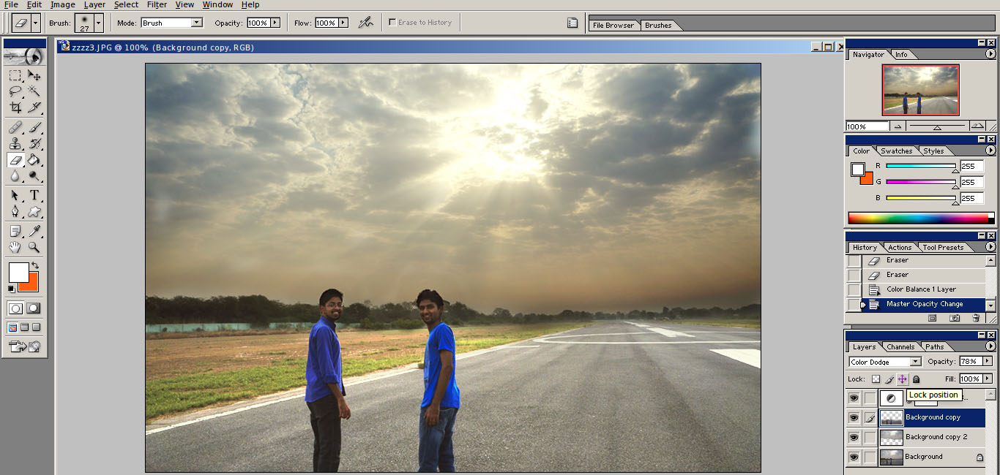
Looks great. So that’s how you can create good photos from underexposed ones, even from a single JPG as in this case.
Here’s the cliche before-after pic.
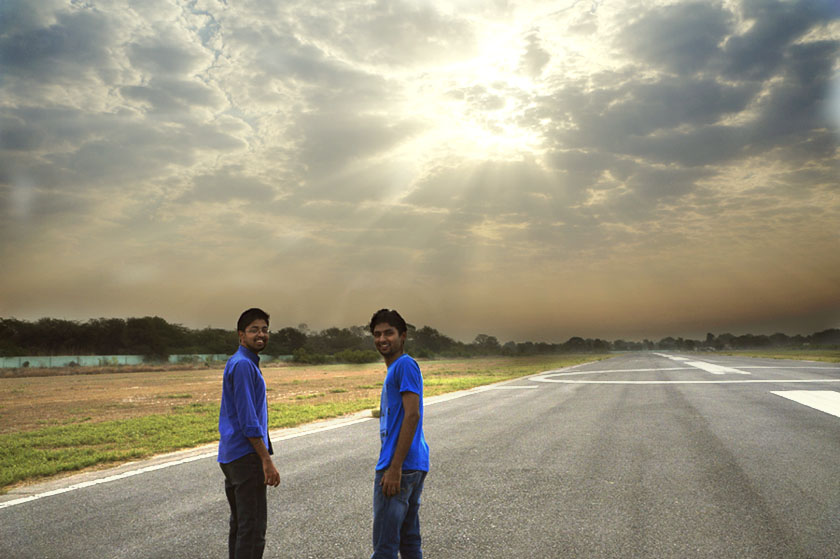
Written by Kundan Krishna on 20th May 2016
The images were edited in Adobe Photoshop 7.0